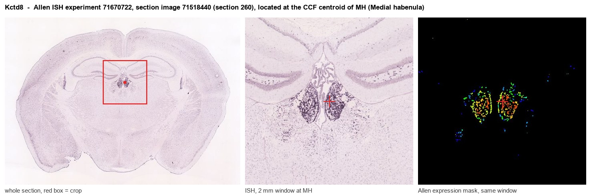
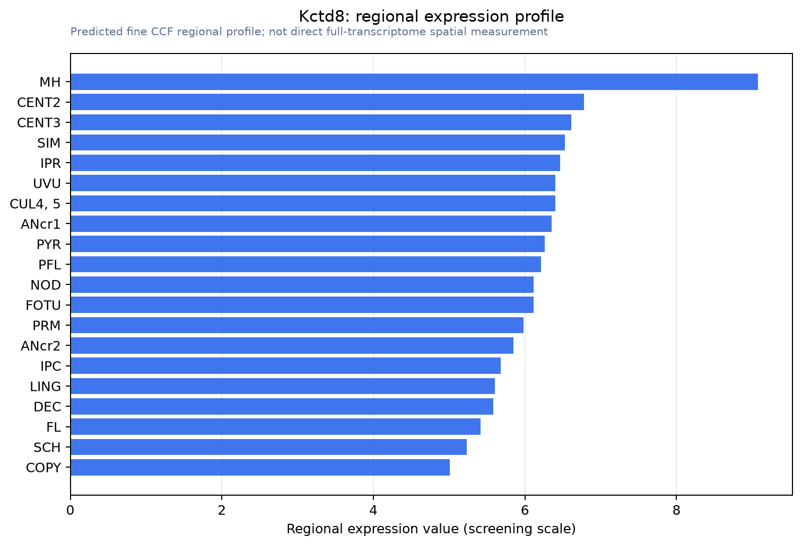

Kctd8
BTB/POZ domain-containing protein KCTD8
Spatial tier: REGION_BIASED · Class: GPCR · Top region: MH (Medial habenula) · Positive regions: 38/554
42.2Discovery Score
43.4Targetability Score
CEvidence grade C
What this means: Kctd8: fine CCF profile is region-biased toward MH (top regions: MH, CENT2, CENT3, SIM, IPR); this is a discovery lead, not direct proof.
Function in MH: evidence, prediction, innovation
- Gene function
- Kctd8 encodes a potassium channel tetramerisation domain-containing protein, one of four KCTDs (8, 12, 12b, 16) that serve as auxiliary subunits of the GABAB receptor. KCTD8 binds the GABAB2 C-terminus as a pentamer, captures G protein beta-gamma subunits, and thereby shapes GABAB signalling kinetics and controls where the receptor is delivered within the neuron. KCTD8 also binds the Cav2.3 R-type calcium channel directly, independently of GABAB.
- Region function
- The medial habenula is an epithalamic nucleus whose cholinergic (ChAT/Slc17a6) and substance P (Tac1) neurons project almost exclusively through the fasciculus retroflexus to the interpeduncular nucleus. This pathway controls nicotine aversion and withdrawal, anxiety, fear and aversive-memory expression.
- Published in this region
- direct Ren et al. 2022 (J Neurosci) showed KCTD8 with KCTD12 is required to enrich GABAB receptors in the axon terminals of habenular cholinergic neurons; KCTD8/12 double or triple knockout mice lose GABAB-mediated potentiation of glutamate release and presynaptic Ca2+ entry at MHb-IPN terminals while somatic GABAB inhibition stays intact, and these mice show stronger IPN activation by aversion-predicting cues and weaker GABAB-dependent fear extinction. Bhandari et al. 2021 (eLife) localised KCTD8, KCTD12b and Cav2.3 to the presynaptic active zone in rostral IPN and showed KCTD8 directly binds and potentiates Cav2.3, scaling MHb terminal release independently of GABAB activation. Allen ISH shows 15-20x MH enrichment.
- Predicted function
- Prediction: KCTD8 is the molecular switch that converts GABAB from an inhibitory into an excitatory presynaptic receptor specifically at MHb cholinergic terminals, and additionally sets baseline Cav2.3-dependent release strength. MHb-restricted Kctd8 deletion should reduce baclofen-induced facilitation of MHb-IPN transmission, weaken aversive memory expression and fear extinction, and is predicted to reduce nicotine-withdrawal-driven IPN recruitment.
- Innovation
- ★☆☆☆☆ 1/5 KCTD8 has already been studied directly in habenular cholinergic neurons and MHb-IPN terminals by two independent groups using knockout mice.
- Tools
- Kctd8, Kctd12, Kctd12b and Kctd16 single and combinatorial knockout mice (Ren et al. 2022; Bhandari et al. 2021); GABAB agonist baclofen and antagonist CGP54626; validated KCTD8 and GABAB1/2 antibodies; Cav2.3 blocker SNX-482; ChAT-IRES-Cre (JAX 006410) for MHb-restricted conditional deletion.
- References
Direct evidence located at the region

Allen ISH experiment 71670722, section image 71518440 (section 260): the section that contains the CCF centroid of Medial habenula according to the Allen image-to-atlas alignment (reference_to_image), with a 2 mm window around that point. Left: whole section, red box = window. Middle: ISH signal. Right: Allen's expression-mask view of the same window. open this image in the Allen viewer
Look it up yourself: Allen Mouse Brain ISH for Kctd8Allen reference atlas: MH (structure 483)ABC Atlas MERFISH viewer(in the ABC Atlas choose dataset MERFISH-C57BL6J-638850-CCF, colour cells by gene "Kctd8" or by parcellation_substructure "MH")All genes confined to MH + 3-D brain
Direct spatial evidence
MERFISH REGION LOCATOR

Regional expression figure

Predicted WMB × fine-CCF profile; not direct full-transcriptome spatial measurement.
Spatial profile
Evidence and specificity
- Evidence status
- PREDICTED_FINE
- Direct sources
- None; predicted localization only
- Exclusive threshold
- 12 positive regions out of 554
- Spatial specificity
- 0.296
- Top-region fraction
- 0.041
- Filter status
- PASS
Interpretation limits
- Cell-type-to-region projection is imputed expression, not direct spatial measurement.
- Adult reference atlases do not establish stability across age, sex, strain, state, or disease.
- Transcript abundance does not guarantee protein abundance or genetic-tool performance.